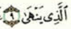
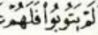
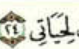

ተጅዊድ
መድ
መድ ማለት መሳብ ወይም መጨመር ማለት ሲሆን ፤ ቁርአን በምንቀራበት ሰዐት የ መድ ፊደሎች ያሉባቸውን ቦታዎች ድምፃችንን እናስረዝማለን።
የ መድ አይነቶች
የ መድ አይነቶች ሁለት ናቸው ናቸው። እነሱም
- መድ አል አስልይ
- መድ አል ፈርዒይ
ናቸው።
መድ አል አስልይ
መድ አል አስልይ ማለት ተፈጥሮአዊ የሆነች መድ ስትሆን አንድ ሀርፍ ያለ እነሱ መቆም አይችሉም ።
የ መድ ፊደሎች
የ መድ ፊደሎች የምንላቸው ሶስት ናቸው። እነሱም
- ፈትሀ ከሆነ ፊደል በኋላ የምትመጣ አሊፍ ( ا )
- ዶም ከሆነ ፊደል በኋላ የምትመጣ ዋው ( و )
- ከስር ከሆነ ፊደል በኋላ የምትመጣ ያ ( ي )
ናቸው።
ምሳሌዎች
እነዚህን እና የመሳሰሉትን ስንስቀራ ፊደሎችን የ ሁለት ሀረካ ያክል እንስባቸውለን። በምናቆምበትም ሰአት ሆነ በምንቀጥልበት ሰአት ሁክማቸው/ብይናቸው ተመሳሳይ ነው።



ነገር ግን ከ ሀርፈል መድ በኋላ ሀምዘተል ወስል ከመጣ ሁሩፎል መዶች ሀርፎችን እንዲሳቡ የማድረግ አቅም አይኖራቸውም።
ምሳሌዎች
መድ አል ፈርዒይ